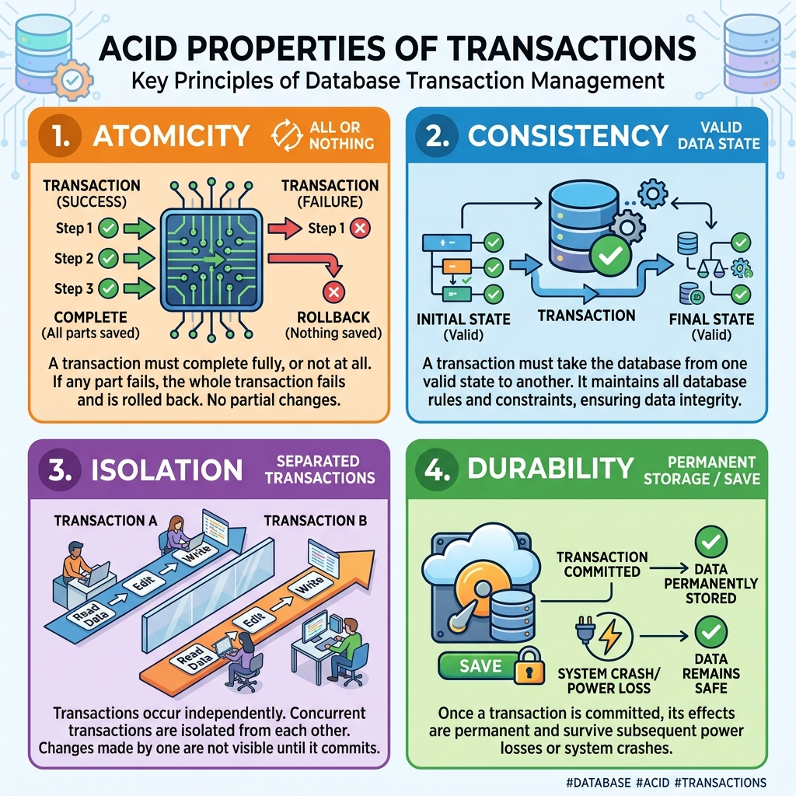
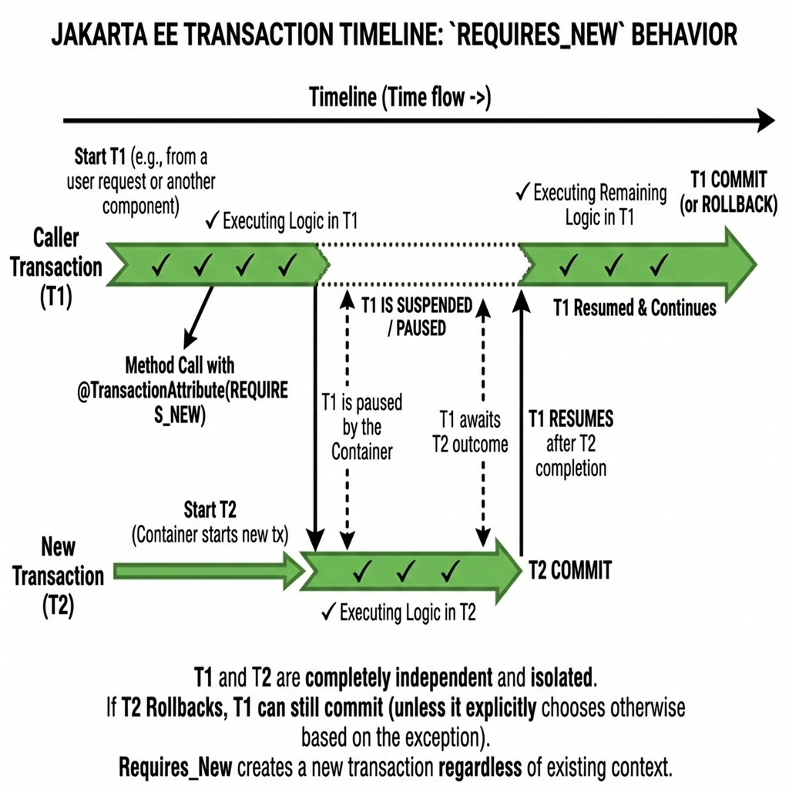
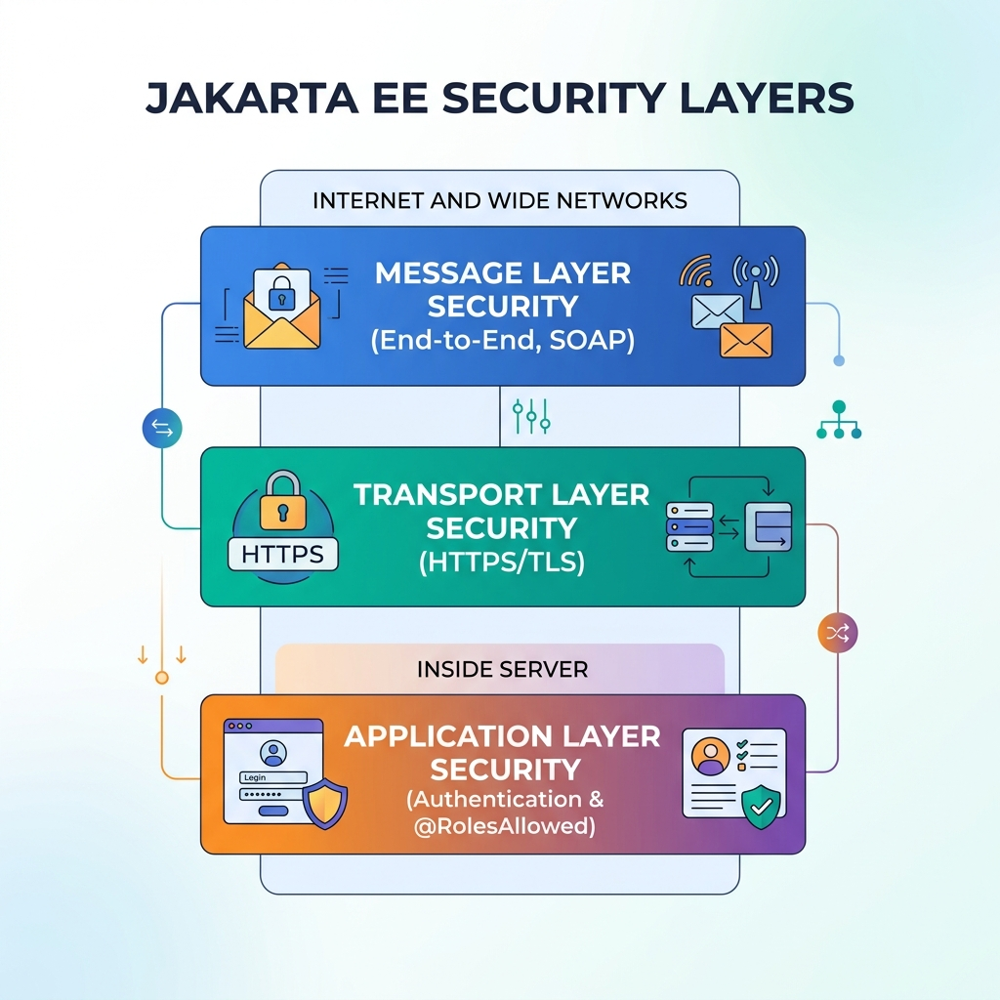

<title>Session 4 — Working with Jakarta Enterprise Beans</title>
<meta name="viewport" content="width=device-width, initial-scale=1">
<meta name="description" content="Session 4: Transactions and ACID properties, transaction demarcation, concurrency and locking, event-driven programming, and Jakarta EE security layers.">
<link rel="stylesheet" href="assets/css/styles.css">
<script>window.PAGE = "s04";</script>

<main class="page">

  <h1>Session 4 · Working with Jakarta Enterprise Beans</h1>
  <p class="lede">Writing business methods is only half the battle. In an enterprise bank or e-commerce engine,
    methods must be <strong>atomic</strong> (safe from half-completed transfers), <strong>thread-safe</strong> (safe
    from simultaneous read/write corruption), <strong>event-driven</strong>, and <strong>strictly secured</strong>.
    Session 4 covers how the EJB container handles all four.</p>

  <div class="callout callout--key"><span class="callout__i">🎯</span>
    <div class="callout__b"><b>Learning Objectives (from the Presenter's Manual)</b>
      <ol style="margin:.6rem 0 0;padding-left:1.2rem">
        <li>Define a transaction and explain the ACID properties with real-world financial examples</li>
        <li>Distinguish between Programmatic (BMT) and Declarative (CMT) transaction demarcation</li>
        <li>Explain all six transaction attributes (<code>REQUIRED</code>, <code>REQUIRES_NEW</code>, <code>MANDATORY</code>, etc.)</li>
        <li>Describe Optimistic (<code>@Version</code>) and Pessimistic locking strategies and when to use each</li>
        <li>Manage concurrency in Singleton beans using <code>@ConcurrencyManagement</code>, <code>@Lock</code>, and <code>@AccessTimeout</code></li>
        <li>Implement event-driven patterns with Message-Driven Beans (JMS) and CDI events (<code>@Observes</code>)</li>
        <li>Explain Application, Transport (TLS), and Message layer security in Jakarta EE</li>
      </ol>
    </div>
  </div>

  <!-- =====================================================================
       4.1 Transaction Processing
       ===================================================================== -->
  <span class="eyebrow">session 4.1</span>
  <h2>Part 1 · Transaction Processing &amp; the ACID Rules</h2>

  <div class="callout callout--analogy"><span class="callout__i">💸</span>
    <div class="callout__b"><b>The Bank Transfer Dilemma</b>
      Transferring $1,000 from Alice to Bob involves two separate database steps:
      <ol style="margin:.3rem 0 0;padding-left:1.2rem">
        <li><strong>Debit</strong> $1,000 from Alice's account</li>
        <li><strong>Credit</strong> $1,000 to Bob's account</li>
      </ol>
      If the power fails or a network cable is pulled after Step 1, Alice loses $1,000 and Bob receives nothing!
      A <strong>transaction</strong> guarantees that both steps execute together, or both are wiped clean (rolled back).
    </div>
  </div>

  <h3>The ACID Properties</h3>
  <figure>
    
    <figcaption><b>The 4 ACID Pillars:</b> The bedrock of any mission-critical enterprise data system.</figcaption>
  </figure>

  <div class="tablewrap"><table>
    <thead><tr><th>Property</th><th>Core Principle</th><th>Real-World Banking Example</th></tr></thead>
    <tbody>
      <tr>
        <td><strong>A — Atomicity</strong></td>
        <td>"All or nothing"</td>
        <td>Debit and credit must either both commit, or both roll back. No partial money movement.</td>
      </tr>
      <tr>
        <td><strong>C — Consistency</strong></td>
        <td>"Follow all rules before &amp; after"</td>
        <td>An account balance cannot violate an overdraft limit (-$500). If it does, transaction aborts.</td>
      </tr>
      <tr>
        <td><strong>I — Isolation</strong></td>
        <td>"Transactions run unaware of each other"</td>
        <td>While Alice's transfer is in-flight, Bob cannot see the half-deposited balance until commit.</td>
      </tr>
      <tr>
        <td><strong>D — Durability</strong></td>
        <td>"Committed writes survive crashes"</td>
        <td>Once committed and acknowledged, server power cuts will never erase the transaction record.</td>
      </tr>
    </tbody>
  </table></div>

  <h3>Transaction Demarcation: CMT vs. BMT</h3>
  <div class="tablewrap"><table>
    <thead><tr><th>Feature</th><th>Container-Managed Transactions (CMT)</th><th>Bean-Managed Transactions (BMT)</th></tr></thead>
    <tbody>
      <tr>
        <td><strong>Control</strong></td>
        <td><strong>Declarative</strong>: Container manages boundaries via annotations</td>
        <td><strong>Programmatic</strong>: Developer invokes <code>userTx.begin()</code> &amp; <code>commit()</code></td>
      </tr>
      <tr>
        <td><strong>Complexity</strong></td>
        <td>Extremely simple; zero boilerplate code</td>
        <td>High; error-prone if developer forgets rollback on exception</td>
      </tr>
      <tr>
        <td><strong>Default</strong></td>
        <td>Yes (95%+ of enterprise EJBs use CMT)</td>
        <td>No; used only when fine-grained checkpointing is required</td>
      </tr>
    </tbody>
  </table></div>

  <h3>The Six Transaction Attributes in CMT</h3>
  <p>Annotate your bean class or method with <code>@TransactionAttribute(TransactionAttributeType.&lt;TYPE&gt;)</code>:</p>

  <div class="tablewrap"><table>
    <thead><tr><th>Attribute</th><th>Caller Has Active Transaction</th><th>Caller Has NO Transaction</th><th>Typical Use Case</th></tr></thead>
    <tbody>
      <tr>
        <td><code>REQUIRED</code> (Default)</td>
        <td>Joins caller's transaction</td>
        <td>Creates a <strong>brand new</strong> transaction</td>
        <td>Standard financial business methods (transfer, deposit)</td>
      </tr>
      <tr>
        <td><code>REQUIRES_NEW</code></td>
        <td>Suspends caller; creates new transaction</td>
        <td>Creates a <strong>brand new</strong> transaction</td>
        <td>Audit logging (must commit even if main transfer rolls back!)</td>
      </tr>
      <tr>
        <td><code>MANDATORY</code></td>
        <td>Joins caller's transaction</td>
        <td>🚨 Throws <code>TransactionRequiredException</code></td>
        <td>Internal helper methods that must not be run standalone</td>
      </tr>
      <tr>
        <td><code>NOT_SUPPORTED</code></td>
        <td>Suspends caller; runs non-transactionally</td>
        <td>Runs non-transactionally</td>
        <td>Heavy read-only catalog searches or image streaming</td>
      </tr>
      <tr>
        <td><code>SUPPORTS</code></td>
        <td>Joins caller's transaction</td>
        <td>Runs non-transactionally</td>
        <td>Flexible read utilities (e.g., getting current exchange rates)</td>
      </tr>
      <tr>
        <td><code>NEVER</code></td>
        <td>🚨 Throws <code>RemoteException</code> / EJB error</td>
        <td>Runs non-transactionally</td>
        <td>Long-running batch report generators that must never hold locks</td>
      </tr>
    </tbody>
  </table></div>

  <figure>
    
    <figcaption><b>REQUIRES_NEW Timeline:</b> Audit logs run in an independent scope so they survive if the parent transaction rolls back.</figcaption>
  </figure>

  <!-- =====================================================================
       4.2 Concurrency Control
       ===================================================================== -->
  <span class="eyebrow">session 4.2</span>
  <h2>Part 2 · Concurrency Control &amp; Locking</h2>

  <h3>The Lost Update Hazard</h3>
  <p>If Teller 1 reads Account $1,000 and prepares to withdraw $800, while Teller 2 reads Account $1,000 and prepares
    to withdraw $600 at the exact same millisecond, the final saved balance could overwrite the other and leave the
    bank balance wrong. Jakarta EE provides two primary concurrency strategies:</p>

  <div class="tablewrap"><table>
    <thead><tr><th>Strategy</th><th>How It Works</th><th>Annotation / Usage</th><th>Best For</th></tr></thead>
    <tbody>
      <tr>
        <td><strong>Optimistic Locking</strong></td>
        <td>Does not lock on read. Checks a version counter at commit time. Fails if another thread bumped the version first.</td>
        <td><code>@Version private int version;</code> on the JPA entity</td>
        <td>Read-heavy systems; high scalability; infrequent conflicts.</td>
      </tr>
      <tr>
        <td><strong>Pessimistic Locking</strong></td>
        <td>Locks database rows immediately on read. Subsequent threads must wait in queue until the lock is freed.</td>
        <td><code>em.find(..., LockModeType.PESSIMISTIC_WRITE)</code></td>
        <td>High-conflict financial write operations where collisions are expected.</td>
      </tr>
    </tbody>
  </table></div>

  <h3>Concurrency in Singleton Beans: <code>@Lock</code> &amp; <code>@AccessTimeout</code></h3>
  <p>A <code>@Singleton</code> bean has only one instance shared across all client threads. By default, the container enforces
    Container-Managed Concurrency (CMC):</p>

  <div class="code-head">ApplicationCacheBean.java — Controlled Concurrency</div>
  <pre><code>package com.globalbank.ejb;

import jakarta.ejb.Singleton;
import jakarta.ejb.ConcurrencyManagement;
import jakarta.ejb.ConcurrencyManagementType;
import jakarta.ejb.Lock;
import jakarta.ejb.LockType;
import jakarta.ejb.AccessTimeout;
import java.util.concurrent.TimeUnit;

@Singleton
@ConcurrencyManagement(ConcurrencyManagementType.CONTAINER)
public class ApplicationCacheBean {

    private String exchangeRates;

    // Multiple threads can read concurrently without blocking each other
    @Lock(LockType.READ)
    public String getRates() {
        return this.exchangeRates;
    }

    // Only ONE thread can write at a time. Other callers will wait up to 3 seconds
    @Lock(LockType.WRITE)
    @AccessTimeout(value = 3, unit = TimeUnit.SECONDS)
    public void updateRates(String newRates) {
        this.exchangeRates = newRates;
    }
}</code></pre>

  <!-- =====================================================================
       4.3 Event-Driven Programming
       ===================================================================== -->
  <span class="eyebrow">session 4.3</span>
  <h2>Part 3 · Event-Driven Architecture: MDBs &amp; CDI Events</h2>

  <p>Enterprise systems must remain responsive. Instead of forcing clients to wait synchronously, systems emit <strong>events</strong>:</p>

  <div class="tablewrap"><table>
    <thead><tr><th>Mechanism</th><th>Scope</th><th>Decoupling Model</th></tr></thead>
    <tbody>
      <tr>
        <td><strong>Message-Driven Bean (MDB)</strong></td>
        <td>Distributed / Asynchronous across servers via JMS</td>
        <td>Publisher drops message on Queue/Topic; MDB consumes in background.</td>
      </tr>
      <tr>
        <td><strong>CDI Events (<code>@Observes</code>)</strong></td>
        <td>In-process / Synchronous or Async within application</td>
        <td>Producer calls <code>event.fire(...)</code>; Observer methods annotated with <code>@Observes</code> react instantly.</td>
      </tr>
    </tbody>
  </table></div>

  <div class="code-head">Lightweight Decoupling with CDI Events</div>
  <pre><code>// 1. Event Payload Object
public class PaymentCompletedEvent {
    public final int accountId;
    public final double amount;
    public PaymentCompletedEvent(int id, double amt) { this.accountId = id; this.amount = amt; }
}

// 2. Event Producer (fires without knowing who is listening)
@Stateless
public class PaymentBean {
    @Inject
    private Event&lt;PaymentCompletedEvent&gt; paymentEvents;

    public void processPayment(int id, double amt) {
        // complete payment ...
        paymentEvents.fire(new PaymentCompletedEvent(id, amt));
    }
}

// 3. Event Observer (completely independent bean)
@Stateless
public class AuditAndSMSNotificationBean {
    public void onPaymentDone(@Observes PaymentCompletedEvent event) {
        System.out.println("Triggered SMS receipt for Account: " + event.accountId);
    }
}</code></pre>

  <!-- =====================================================================
       4.4 Enterprise Security
       ===================================================================== -->
  <span class="eyebrow">session 4.4</span>
  <h2>Part 4 · Security in Jakarta Enterprise Applications</h2>

  <figure>
    
    <figcaption><b>Three Security Layers:</b> Defense-in-depth from application permissions to transport encryption.</figcaption>
  </figure>

  <h3>1. Application-Layer Declarative Security</h3>
  <p>Control method-level access directly with standard Jakarta security annotations:</p>

  <div class="code-head">SecureBankService.java — Declarative Role Access</div>
  <pre><code>import jakarta.annotation.security.RolesAllowed;
import jakarta.annotation.security.PermitAll;
import jakarta.annotation.security.DenyAll;
import jakarta.ejb.Stateless;

@Stateless
public class SecureBankService {

    @PermitAll
    public String getBankBranchHours() {
        return "9:00 AM - 5:00 PM";
    }

    @RolesAllowed({"TELLER", "MANAGER"})
    public double checkBalance(int accountId) {
        return 5400.25;
    }

    @RolesAllowed("MANAGER")
    public void authorizeCreditLine(int customerId, double limit) {
        // Only managers can authorize loans
    }

    @DenyAll
    public void deprecatedInternalDebugDump() {
        // Blocked for all callers
    }
}</code></pre>

  <h3>2. Programmatic Security via <code>EJBContext</code></h3>
  <p>When authorization logic depends on dynamic runtime data (such as transfer dollar thresholds), use programmatic inspection:</p>

  <pre><code>@Stateless
public class TransferService {

    @Resource
    private EJBContext context;

    public void transfer(int from, int to, double amount) {
        java.security.Principal caller = context.getCallerPrincipal();

        if (amount > 10000.00 && !context.isCallerInRole("MANAGER")) {
            throw new SecurityException("Transfers over $10,000 require MANAGER credentials!");
        }
        System.out.println("Audit: Transfer executed by " + caller.getName());
    }
}</code></pre>

  <!-- Interactive Simulation Bench -->
  <div class="bench" data-run="canned">
    <div class="bench__head">
      <span class="dot"></span>
      <span class="kind">interactive simulation</span>
      <span class="mode">Transaction Demarcation &amp; Rollback Replay</span>
    </div>
    <pre class="bench__code"><code>// Client calls transfer(from: 101, to: 102, amount: $2,500)
// Container opens CMT Transaction T1 [REQUIRED]
Account 101 debited: -$2,500.00 (Balance remaining: $450.00)
Account 102 credited: Target account #102 is frozen by compliance!
// Container catches IllegalStateException -> triggers automatic ROLLBACK</code></pre>
    <div class="bench__controls">
      <button class="btn-run" type="button">Simulate Rollback Event</button>
      <span class="bench__hint">Observe how the EJB container intercepts exceptions and reverses database changes.</span>
    </div>
    <script type="text/plain" class="bench__canned">
[07:22:10,001 INFO] [EJB CMT] Initiating Transaction [TxId: 0x9f44a] for TransferBean.transfer()
[07:22:10,005 INFO] [JTA Resource] Enlisting DataSource (PostgreSQL) in TxId 0x9f44a
[07:22:10,009 INFO] [SQL UPDATE] accounts SET balance = balance - 2500 WHERE id = 101 -> 1 row affected
[07:22:10,014 WARN] [Business Check] Target account 102 is marked FROZEN: ComplianceLockException thrown!
[07:22:10,016 INFO] [EJB CMT] Runtime exception intercepted. Marking TxId 0x9f44a as SetRollbackOnly
[07:22:10,020 INFO] [JTA TransactionManager] Executing ROLLBACK for TxId 0x9f44a
[07:22:10,024 INFO] [SQL ROLLBACK] Undoing debit on account 101 -> Balance restored to $2,950.00
[07:22:10,027 ERROR] [Client Response] 500 Transaction aborted: Account 102 is frozen. No funds moved.
    </script>
    <pre class="bench__out" aria-live="polite"></pre>
  </div>

  <!-- =====================================================================
       Knowledge Check Quiz
       ===================================================================== -->
  <span class="eyebrow">check yourself</span>
  <section class="quiz" data-quiz>
    <h3>Session 4 · Knowledge Check</h3>
    <script type="application/json">
    [
      {
        "q": "Which ACID property ensures that either all operations succeed or everything is rolled back?",
        "opts": [
          "Consistency",
          "Atomicity",
          "Isolation",
          "Durability"
        ],
        "a": 1,
        "why": "Atomicity means 'all or nothing'. If any step fails, the entire transaction is unwound."
      },
      {
        "q": "Which transaction attribute should you use for audit logging so the log is saved even if the main transaction fails?",
        "opts": [
          "REQUIRED",
          "MANDATORY",
          "REQUIRES_NEW",
          "SUPPORTS"
        ],
        "a": 2,
        "why": "REQUIRES_NEW always suspends the caller's transaction and executes in a separate transaction that commits independently."
      },
      {
        "q": "How is Optimistic Locking implemented in a JPA entity?",
        "opts": [
          "Using synchronized methods",
          "Adding a field annotated with @Version",
          "Using LockModeType.PESSIMISTIC_WRITE",
          "Calling connection.setReadOnly(true)"
        ],
        "a": 1,
        "why": "@Version instructs JPA to verify the entity's version column before committing, throwing OptimisticLockException if another thread modified it."
      },
      {
        "q": "On a @Singleton bean, which annotation allows multiple concurrent read threads without blocking?",
        "opts": [
          "@Lock(LockType.READ)",
          "@Lock(LockType.WRITE)",
          "@AccessTimeout(0)",
          "@TransactionAttribute(TransactionAttributeType.NEVER)"
        ],
        "a": 0,
        "why": "@Lock(LockType.READ) permits concurrent parallel execution as long as no WRITE lock is held."
      },
      {
        "q": "Which annotation restricts an EJB method so only users with TELLER or MANAGER roles can invoke it?",
        "opts": [
          "@PermitAll",
          "@RolesAllowed({\"TELLER\", \"MANAGER\"})",
          "@SecurityCheck(\"TELLER, MANAGER\")",
          "@DenyAll"
        ],
        "a": 1,
        "why": "@RolesAllowed takes an array of role names permitted to execute the annotated method."
      }
    ]
    </script>
  </section>

  <!-- =====================================================================
       Summary
       ===================================================================== -->
  <span class="eyebrow">recap</span>
  <h2>One-Line Summary</h2>
  <div class="tablewrap summary"><table><tbody>
    <tr><td><strong>ACID</strong></td><td>Atomicity (all-or-nothing), Consistency (valid rules), Isolation (independent), Durability (permanent).</td></tr>
    <tr><td><strong>CMT</strong></td><td>Declarative transactions managed by container via <code>@TransactionAttribute</code> (default: <code>REQUIRED</code>).</td></tr>
    <tr><td><strong><code>REQUIRES_NEW</code></strong></td><td>Runs in a brand new transaction; perfect for independent audit logging.</td></tr>
    <tr><td><strong>Optimistic Lock</strong></td><td><code>@Version</code> counter; high performance, fails at commit time on conflicts.</td></tr>
    <tr><td><strong>Pessimistic Lock</strong></td><td>Locks rows on read; queues concurrent threads until transaction releases lock.</td></tr>
    <tr><td><strong>Singleton Locks</strong></td><td><code>@Lock(READ)</code> for concurrent getters; <code>@Lock(WRITE)</code> for exclusive mutators.</td></tr>
    <tr><td><strong>Security</strong></td><td><code>@RolesAllowed</code>, <code>@PermitAll</code>, <code>@DenyAll</code> declarative access enforcement.</td></tr>
  </tbody></table></div>

</main>

<script src="assets/js/course.js"></script>
<script src="assets/js/runner.js"></script>
